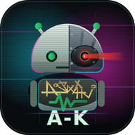

Andro-Kontrol
Maneja el móvil hablando y moviendo la cabeza. Pensado para quien no puede usar las manos, o no siempre.
- Un puntero que sigue tu nariz con la cámara frontal. También se mueve por voz, con las direcciones de la brújula: «norte», «este cincuenta»…
- Comandos de voz para lo demás: pulsar, pulsación larga, atrás, inicio, recientes, desplazar, abrir apps, cerrar, salir, pestañas… y los botones de cualquier app por su nombre («enviar», «buscar», «pulsa descargar»).
- Dictado: al aparecer el cursor en un campo de texto dictas, y con «entra» se escribe. No hace falta el teclado.
- El teléfono por voz: «responde», «cuelga», «llama a Marta». Mientras suena el tono sigue encendido; con la llamada descolgada se aparta, y vuelve en los silencios para que puedas colgar hablando.
- WhatsApp: «guasea a Marta» abre su chat y ya puedes dictar el mensaje.
- Música y vídeo: reproduce, pausa, siguiente canción, volumen… con cualquier reproductor.
- Convive con tu asistente: si dices «alexa», Andro-Kontrol se apaga solo y vuelve cuando ella termina de hablar, así no confunde su voz con órdenes tuyas.
- Bloqueo por voz (opcional, y viene apagado): un candado que solo abre tu voz, diciendo tu santo y seña. Si no te reconoce, manda el móvil a su pantalla de bloqueo. Lee el aviso antes de encenderlo.
- Todo ocurre en el móvil: la imagen de la cámara no sale de ahí y los comandos se reconocen sin conexión.
Está en desarrollo: versión 0.9.3 (beta). Se usa a diario en el móvil de pruebas, (API-Android 12). Si se detectan fallos por uso, se agradece el reporte.
Aviso sobre el bloqueo por voz
Encenderlo es decisión tuya, y el riesgo también. Úsalo con precaución y sabiendo lo que hace y lo que no:
- No es seguridad fuerte. Una voz se puede grabar e imitar, y el parecido se mide con un margen. Quien guarda el móvil de verdad es su propio bloqueo (huella, PIN o patrón): esto es una capa más encima, nunca un sustituto.
- Puede no reconocerte: si exiges mucho parecido, si estás afónico, si hay ruido o si el micrófono está tapado. No te deja sin móvil —sigues entrando con tu huella o tu PIN, y puedes apagar Andro-Kontrol con su botón—, pero incordia.
- Manda el móvil a la pantalla de bloqueo en cada intento que no reconoce, y cuando se cumplen las esperas.
Se enciende, se apaga y se ajusta en ⋮ → Ajustes → Bloqueo por voz, con Andro-Kontrol apagado: allí se graba el perfil de voz y el santo y seña, se marca o se desmarca la casilla, y se ajustan el parecido exigido (de partida 38 %, con tope 47 % para que no puedas dejarte fuera) y las dos esperas: candado abierto, de 7 a 10 minutos sin oírte; candado cerrado, de 30 a 60 segundos, hables o no. El manual lo explica entero.
Descarga
- Andro-Kontrol 0.9.3 beta (apk, 81 MB). Lleva dentro el reconocimiento de voz en español, así que no necesita conexión para los comandos.
- Manual en PDF, que se puede leer con lector de pantalla: en español o en inglés.
- Todas las versiones, en GitHub.
Cómo se instala
- Descarga la APK en el móvil.
- Ábrela con Archivos (Files) de Google. Con otros gestores, Android puede no dejar instalar: la app que abre el fichero necesita permiso para instalar aplicaciones.
- Android pedirá permiso para instalar apps de origen desconocido, y Play Protect puede analizarla antes. Es lo normal en cualquier app que no venga de Google Play.
- Abre Andro-Kontrol y concede los permisos que pida desde el menú ⋮ → Ajustes: accesibilidad, cámara, micrófono, teléfono, responder llamadas, llamar y agenda, y mantener la pantalla en vertical.
Comprobar que la APK es la nuestra
Todas las versiones se firman con el mismo certificado:
APK (0.9.3 beta) SHA-256: 0efd5f568b3974534f58af6270e25cd147dccd3cb78bd2f23c4adbc90e87c178
SHA-256: 40:EA:E6:CA:4A:6C:CE:5D:38:D6:61:A4:8D:9B:64:18:25:4F:01:3E:D7:75:83:4A:98:3B:E9:82:73:AF:C2:29
Requisitos
- Android 8 o superior, procesador ARM de 64 bits.
- Para el dictado, el reconocimiento de voz del propio móvil.
Licencia y créditos
Andro-Kontrol es © 2026 pipataki, todos los derechos reservados: se reparte la aplicación, no el código fuente. Lleva dentro componentes con licencia Apache 2.0, de Alpha Cephei (Vosk y su modelo de voz español), Google (MediaPipe y su modelo de puntos de la cara), el proyecto Android (CameraX) y el proyecto JNA. El robot del icono es un dibujo propio, no el androide de Google.
El proyecto hermano para el ordenador, VoiceController, sí es software libre (LGPLv3).
Contacto
In English
Andro-Kontrol lets you use your Android phone by voice and by moving your head, built with accessibility in mind. A pointer follows your nose through the front camera (or moves by voice, with compass directions), voice commands do the tapping, scrolling, app switching and more, and dictation writes into any text field. It steps aside during phone calls. There is an optional voice lock, off by default: a padlock that only your own voice opens. It is one more layer, not strong security — a voice can be recorded — and turning it on is your own call; the manual explains the risks and how to set it up. Everything runs on the phone: the camera image never leaves it and commands are recognised offline. Currently a beta (0.9.3), tested on a Motorola Moto G31 with Android 12. Download the APK (81 MB) and open it with Google Files to install. The app is © 2026 pipataki, all rights reserved; the source code is not published. There is a manual in English. It bundles Apache 2.0 components (Vosk, MediaPipe, CameraX, JNA).